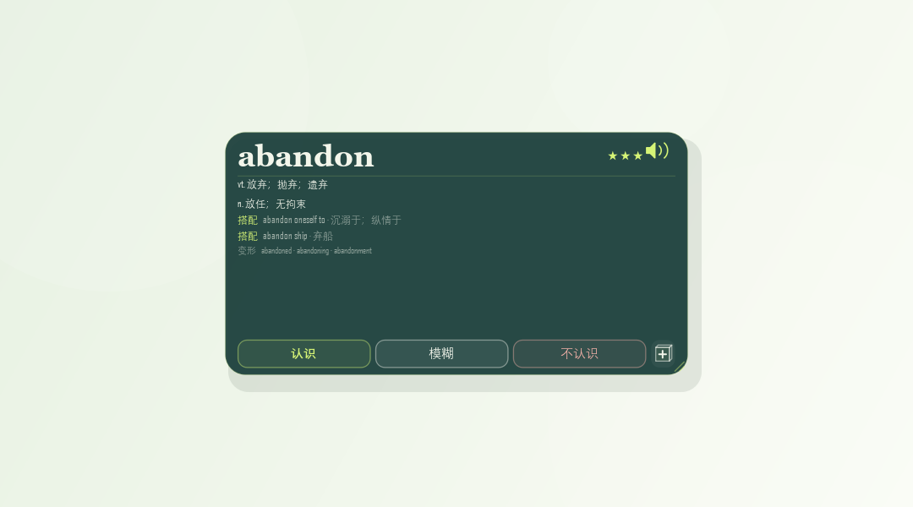
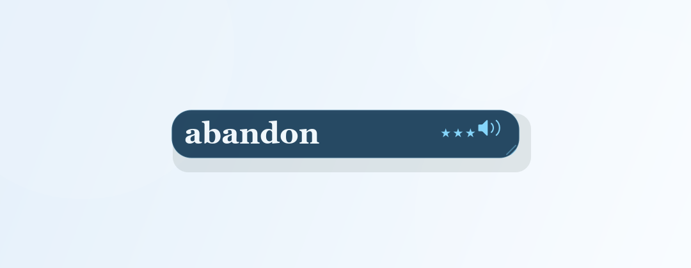
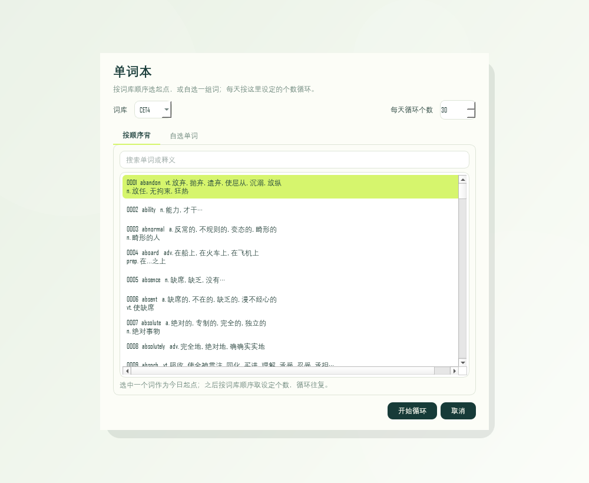
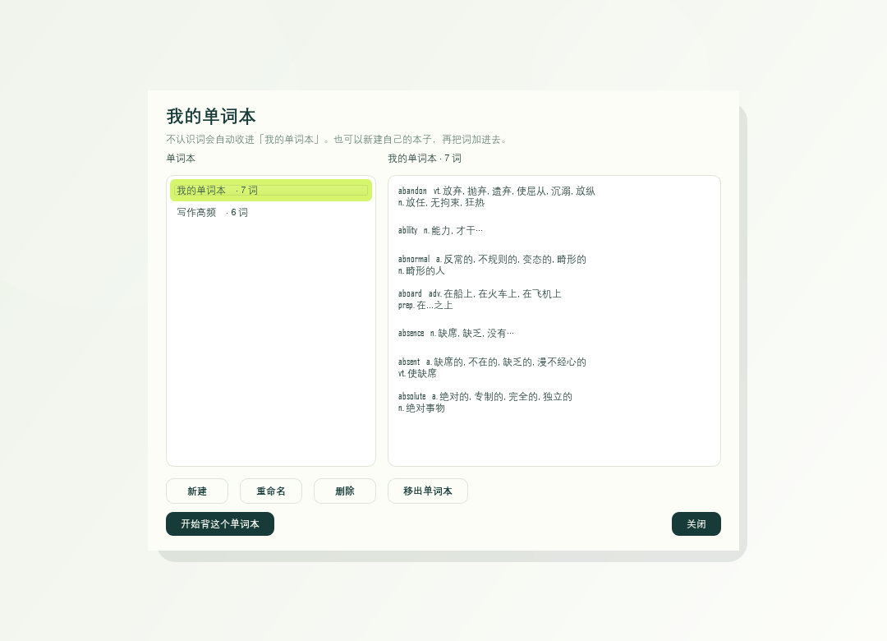

三档评级，真的会改变队列
不是点个赞就算。认识 / 模糊 / 不认识分别决定这个词今天还出不出现、排在第几位。
n. 意外发现美好事物的运气；机缘巧合
有道补充 · 已缓存在本地
可交互演示 · 悬停展开、点评级换词、点下方圆点换配色
它就是这样做事的
鼠标移到胶囊上，中文义项、词形和三个按钮一起出现；移开就收起，只剩一个单词。单击胶囊可以固定，再点一次解除。
“认识”的词当天不再出现；“模糊”排到后面第 2 位；“不认识”排到第 1 位，并自动收进“我的单词本”，之后可以专门复习。
滚轮往下是下一个词，往上是上一个词，双击直接换词。当天标记“认识”的词次日自动回到队列，学习日历里仍保留每天的三档次数。
不只是一个单词框
不是点个赞就算。认识 / 模糊 / 不认识分别决定这个词今天还出不出现、排在第几位。
不认识的词自动收集，同一个词不会重复加入；可新建、重命名、移出，也能从任意本子开始背。
拖到屏幕边缘缩成一条窄条，鼠标移上去自动展开；Alt+Q 一键隐藏 / 恢复，Alt+W 让鼠标穿透到下层窗口。
青绿、湖蓝、琥珀、靛紫。单词、星级、释义与按钮都在同一颗胶囊里，颜色一换，整颗都跟着变。
显示当前词时，后台向有道补充更完整的中文义项和词形，最多各 4 / 5 条，结果缓存在本地；断网或失败就回退到随包词库。
基于 ECDICT 的 BNC / COCA 词频排名：≤3000 三星，≤10000 二星，其余一星。只作学习优先级参考，不是考试大纲评级。
词库与重要度数据随包内置。安装版把配置与学习记录写到 %APPDATA%\FloatingWordBall，便携版写在程序所在文件夹——学习数据都不写入注册表（安装版仅写一条卸载登记），不需要账号，也不用把学习数据交给任何服务器。
按月翻看每天认识 / 模糊 / 不认识的次数，哪天偷懒、哪天用功，一眼看得到。
从下载到开始背词
FloatingWordBall-Setup-1.0.0.exe。FloatingWordBall-Portable-1.0.0.zip。D:\Apps\FloatingWordBall。FloatingWordBall.exe 启动，卸载时直接删掉文件夹即可。系统要求：Windows 10 / 11；安装版与便携版都自带运行环境，无需另装 Python。




手不离键盘
你可能想先知道
安装版会走安装向导，自动建立开始菜单和桌面快捷方式，适合长期使用；便携版解压即用、不写系统和注册表，适合放 U 盘或不想安装的场景。两者功能完全一致。
不需要。安装版和便携版都打包了运行环境，双击即可运行。
双击托盘图标，或右键托盘图标 →“关闭鼠标穿透”，也可以按 Alt+W 或 Esc。穿透只在本次运行有效，重启后会自动关闭。
通常是被其他软件占用了全局快捷键。打开托盘右键菜单，用“隐藏 / 显示”“关闭鼠标穿透”完成同样操作，或先释放冲突的快捷键。
显示当前词时，程序会向有道词典补充更完整的中文义项和词形，并缓存在本地。没有网络或请求失败时，会回退到随包的本地词库，不影响使用。词库和重要度数据本身都在本地。
它已被标记为“认识”，当天不再出现，明天会自动回到循环；学习日历里仍能看到今天的记录。想让它立刻回来，右键托盘 →“恢复今日已认识的单词”。
不会上传。单词本、学习计划、评级记录都保存在本机：安装版在 %APPDATA%\FloatingWordBall，便携版在程序所在文件夹；学习数据不写入注册表，安装版仅写一条卸载登记，也不需要账号。旧版放在程序目录里的数据会在首次启动时自动迁移过来。
版本记录
首个正式发布：Windows 安装版与便携版；内置 ECDICT（MIT）四套词库与词频重要度；四套配色、三档评级、我的单词本、学习日历、侧边隐藏与全局快捷键，离线可用。
原始版公开基线：源码与数据完成安全备份并公开，作为后续发布的起点。
选择安装版或便携版，Windows 10 / 11 都能用。无需另装 Python。
%APPDATA%\FloatingWordBall。
下载安装版
便携版
FloatingWordBall-Portable-1.0.0.zip
解压即用，数据就留在解压目录，不写系统和注册表，适合放 U 盘。
下载便携版
版本 v1.0.0 · Windows 10 / 11 · 词库来自 ECDICT（MIT）
查看所有版本与校验值 →